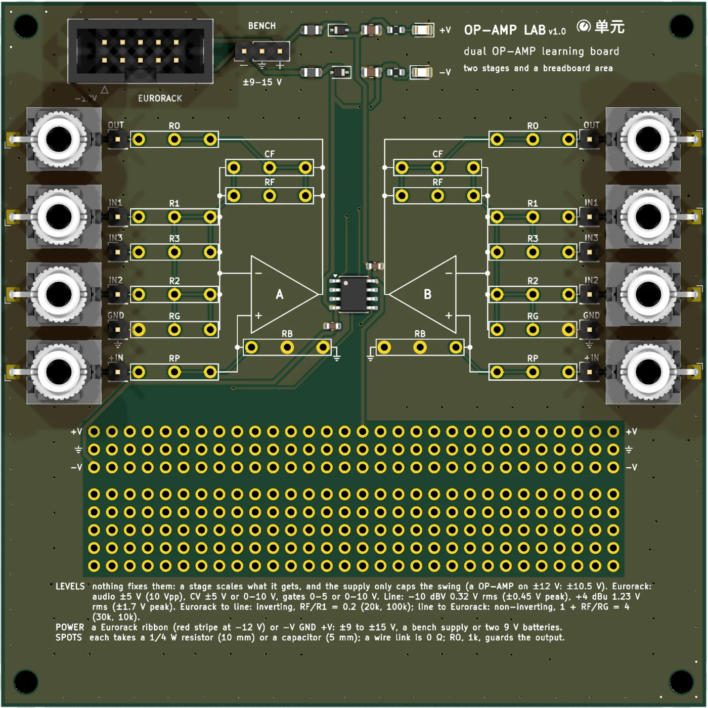
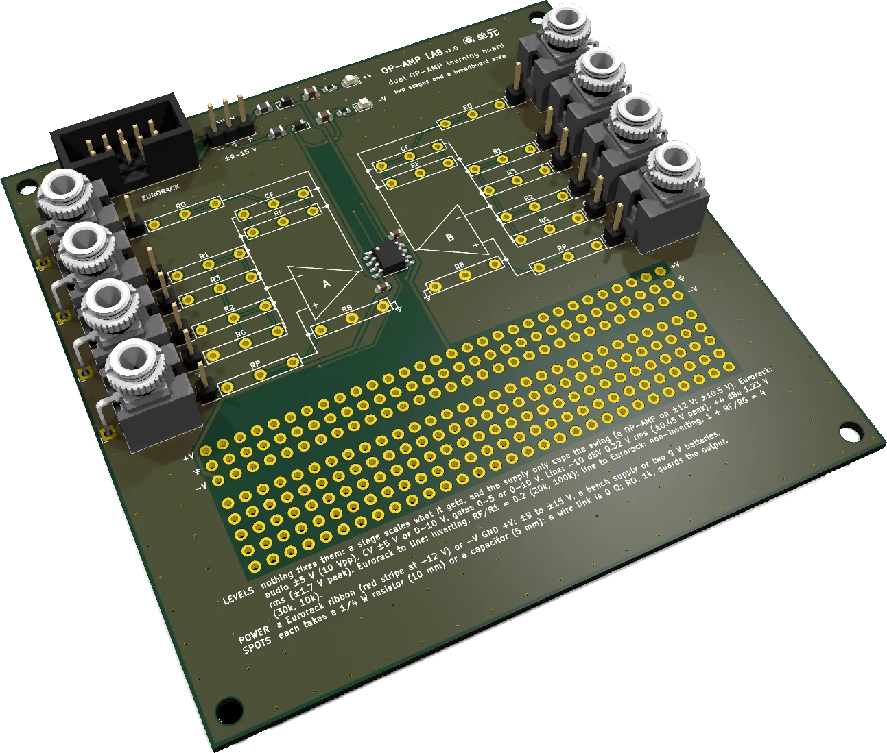
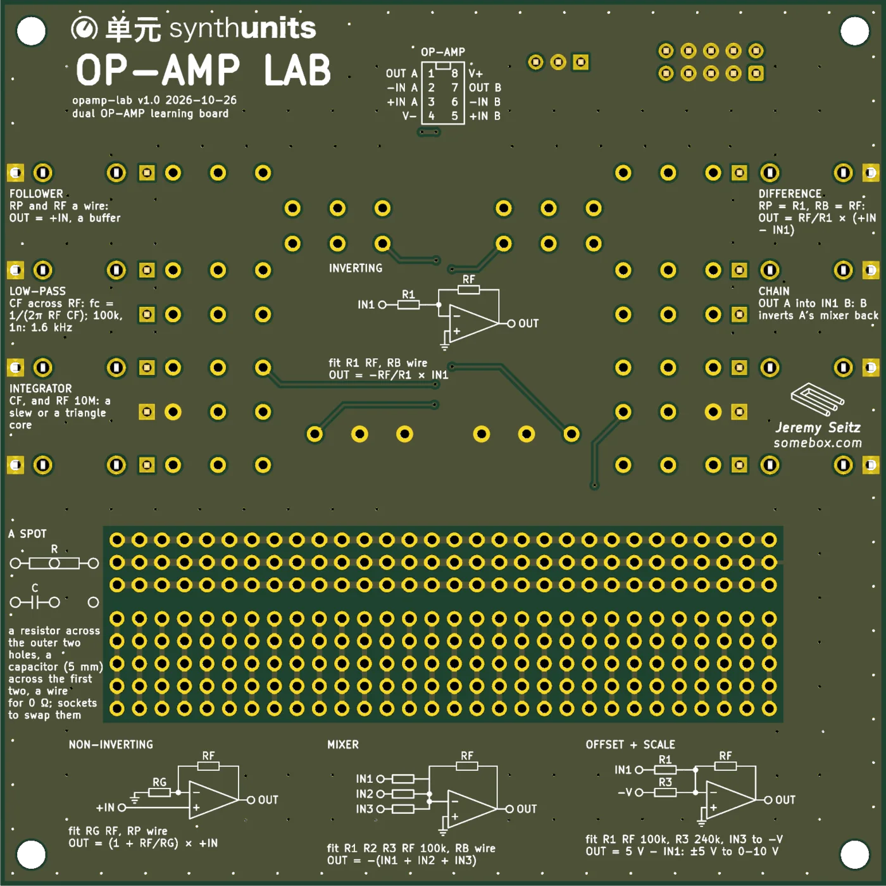
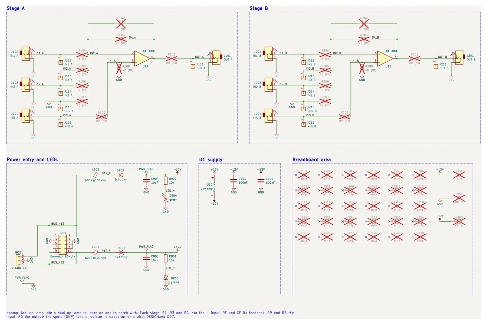

Op-amp lab board: two stages to learn on
A 100 × 100 mm board for learning op-amps: two stages drawn as their schematic, with jacks, header pins and a small breadboard area.
A learning board for op-amps, to try the common patterns and to patch with. One dual op-amp, its two halves as two identical stages, A on the left and B on the right, mirror images of each other. Each stage is drawn on the board as its own schematic, with spots for three summing input resistors, a feedback resistor and capacitor, a gain resistor, the + input's series and bias parts, and the output resistor.
Thonkiconn jacks patch it into a Eurorack case, header pins on the nodes take jumper wires, and a breadboard-style area with +V, GND and −V rails takes whatever else a circuit needs. The back is a cheat sheet: the patterns with what to fit and their formulas, Eurorack and line levels, and the pinout.
I drew it to learn on, and perhaps to bring to meetups. Then I cut it down into the op-amp minimodule, which took its place in the first order. This board is designed and checked, but not ordered and not built.
- Status
- Drawn and checked; held back from the first order
- Version
- v1.0 (2026-10-26)
- Board
- 100 × 100 mm, 2 layers



What it does
- One dual JFET-input op-amp as two identical stages.
- Nine spots a stage: R1 to R3 into the − input, RF and CF in the feedback, RG to ground, RP and RB at the + input, RO at the output.
- Eight Thonkiconn jacks: IN1, IN2, +IN and OUT for each stage, their sleeves on ground. IN3 and GND are header pins only.
- Designed for a swing of about ±10 V on ±12 V.
- Power: a Eurorack 10-pin ribbon, or −V, GND and +V on a 3-pin header from a bench supply or two 9 V batteries, ±9 to ±15 V.
- A ferrite and a Schottky diode on each rail, 10 µF and a green LED per rail.
- 100 × 100 mm, an M3 hole in each corner for standoffs on a desk.
Wiring and setup
- Each spot is three holes: a 1/4 W resistor across the outer two (10.16 mm), a capacitor with 5 mm leads across the first two, a wire across either. Turned-pin sockets let values be swapped without soldering.
- RO is 1 kΩ for Eurorack, which guards the op-amp, or a wire.
- Inverting: R1 and RF, a wire in RB. Mixer: R1, R2, R3 and RF at 100 kΩ, a wire in RB; stage B can invert it back.
- Low-pass: an inverting stage with CF across RF; 100 kΩ and 1 nF give about 1.6 kHz.
- Eurorack to line level: an inverting stage at about ×0.2 (RF 20 kΩ, R1 100 kΩ). Line to Eurorack: a non-inverting stage at about ×4 (RF 30 kΩ, RG 10 kΩ).
- The ribbon's red stripe goes to −12 V, pin 1, marked on the board. Use one supply at a time.
Limits and open questions
- Not ordered and not built.
- Its printed texts carry figures I later corrected on the minimodule: use 10 kΩ in RP rather than a wire, expect about 4.9 V rather than 5 V from the offset pattern's 240 kΩ, and about ±10 V of swing rather than ±10.5 V.
- On ±12 V the same input limit applies: keep the + input above about −7 V, or use an inverting stage.
Development notes
- I drew it in place of the quad op-amp breakout on the chip panel: a board to learn on, ten of them, perhaps for meetups.
- Then I wanted it smaller and fit for a case, and the op-amp minimodule came out of it. If I order this one later, the factory would fit the surface-mount parts and I would add the jacks and headers by hand.
Schematic
The schematic as drawn, with each chip named by its function rather than its part number. The design isn't open source yet, so there are no files to download.


Would you use a OP-AMP LAB? A thumbs-up on its tracking issue is how I count interest, and you can subscribe there to follow its bring-up. Questions and ideas go to the discussions.